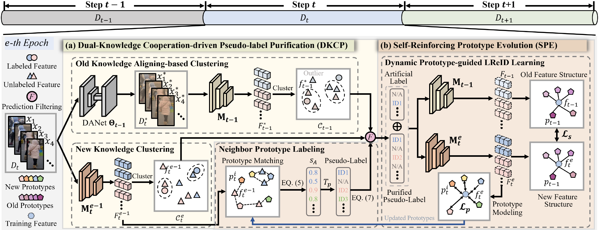

"Self-Reinforcing Prototype Evolution with Dual-Knowledge Cooperation for Semi-Supervised Lifelong Person Re-Identification", ICCV 2025
作者: 徐昆仑(博士生)，卓凡，李江梦，邹旭，周嘉欢
通讯作者: 周嘉欢
在监控视频流和城市安防系统等应用场景中，数据持续产生并且呈现多样的变化，使得传统重识别（Re-Identification, ReID）方法面临严峻挑战。 由于大量新到达的图像往往难以完全标注，现有方法依赖于全监督学习的方法无法适应这种“多阶段、弱标注”的环境。因此，本文提出一个更具现实意义的新任务——半监督终身行人重识别 （Semi-Supervised Lifelong Person Re-Identification，Semi-LReID）。Semi-LReID的核心难点包含两个方面：（1）标签极度稀缺：若直接依赖标注数据进行训练，模型易过拟合， 难以学习鲁棒的知识，而现有基于伪标签的方法容易引入错误伪标签，造成误导模型学习。（2）灾难性遗忘：模型在适应新数据的过程中不断更新模型参数，在长期学习中易导致模型逐渐忘记之前已学的身份表征。
为克服上述问题，论文提出了新旧知识协同引导的原型自强化框架。具体贡献如下：（1）自我强化的原型演化机制：通过引入可学习身份原型，动态建模身份分布，引导伪标签生成； 进而利用伪标签学习更新模型和原型；新原型又反过来提升伪标签质量。上述过程形成“原型-标签-训练”三者循环自强化机制。（2）新旧模型双知识协同驱动的伪标签净化机制： 利用当前模型和历史模型分别对未标注数据聚类，并基于跨集合一致性估计进行伪标签净化，实现模型对长期学习过程中所积累知识的有效利用。实验结果表明，本文方法在50%， 20%和10%的标注比例下均取得了领先性能。此外，随着标注比例的降低，本方法相比于现有终身学习和半监督学习方法的优势愈加明显。
该论文的第一作者是北京大学王选计算机研究所2023级博士生徐昆仑, 通讯作者是周嘉欢助理教授。